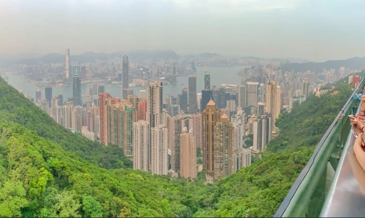
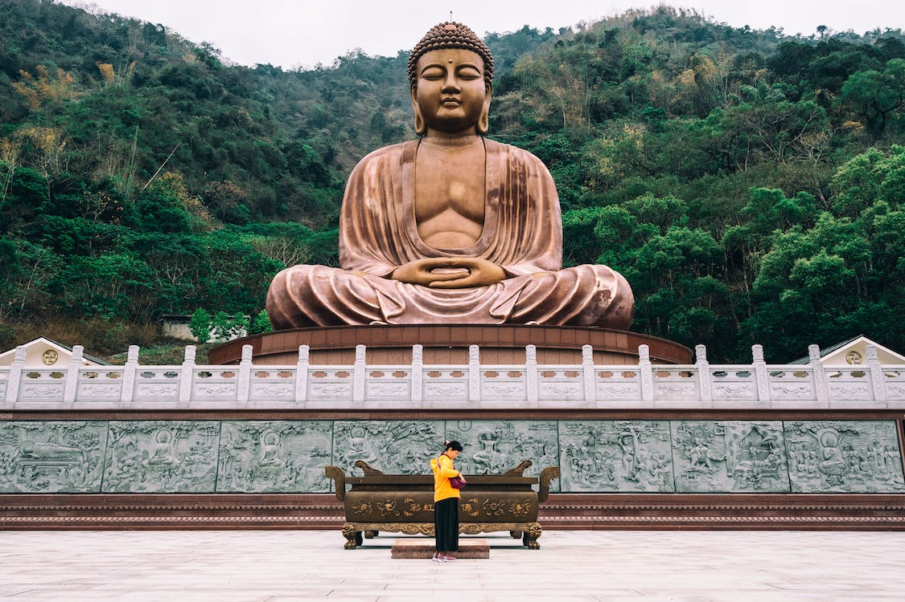

פסגת ויקטוריה

טמון בחלק המערבי של הונג קונג, פסגת ויקטוריה היא פסגה הנודעת ביופייה. נודע גם בשם הר אוסטין ונמצא כמעט 552 מעל קו הים.
ממקום זה, לכל עבר תשליכו עיניכם תמצאו גורדי שחקים מעורבבים עם יערות רחבים אשר מרכיבים את החלק הזה של האי.
תהיו בטוחים לבקר את המקום, בלעדיו טיולכם בהונג קונג יהיה חסר. מקום זה באמת ייחודי במראו.
מיקום: הונג קונג המערבית.
שעות: פתוח 24 שעות.
מחיר: ללא מחיר.
בודהה הגדול (פסל בודהה טיאן טאן)

עומד בגובה של 34 מטר, בודהה טיאן טאן הוא פסל ענקי של בודהה שאקיאמוני הנמצא ליד מנזר פו לין.
זה אחד מהמקומות השלווים שתמצאו בהונג קונג ומסמל את הקשר ההרמוני בין אדם לטבע. תהיו
צריכים לעלות 268 מדרגות בשביל להגיע לפסל הנחושת אשר מורכב מ202 חלקים.
מיקום: דרך נגונג פינג, אי לנטאו.
שעות: 17:30-10:00.
מחיר: הכניסה היא בחינם, אבל בשביל כניסה להיכל התערוכות יש לשלם 56 דולר הונג קונגי.
גב הדרקון
אחד מהמקומות היפים ביותר בהונג קונג הוא גב הדרקון אשר מחבר בין וואן צ'אם שאן ופסגת שקאו. זהו רכס אשר מוקף בנוף טבע יפיפה.
גב הדרקון גם כולל פסגה יוצאת מן הכלל בה אפשר להנות מנוף היערות והחוף של האי.
מיקום: ליד וואן צ'אם שאן ופסגת שק או.
שעות: 12:00-00:00.
מחיר: 296 דולר הונג קונגי פר מבוגר.